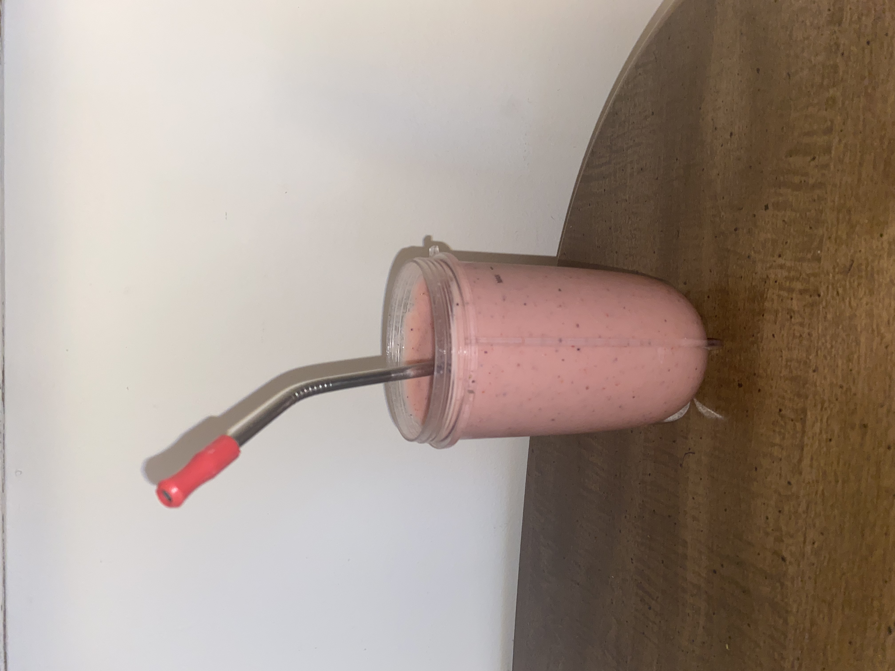

Peanut Butter Strawberry Banana and Blueberry Smoothie
Ingredients:
- Powdered Peanut Butter
- Can substitute regular peanut butter
- Frozen Strawberries
- Frozen Bananas
- Frozen Blueberries
- Milk of Choice
- I use either oat milk or almond milk
Cooking Tools Needed:
- Blender
- I use a Nutri Bullet -- which is nice because I can drink
out of the blender cup
- Measuring Utensils
Recipe:
- 1. Depending on the size of the blender,
this is how I determine how much to add for each ingredient
- 2. Mix all of the ingredients together in the blender:
- The following are approximations:
- 1/4 C Frozen Strawberries, Bananas, Blueberries
- 2 TBSP Powdered Peanut Butter
- 1 1/2 C Milk
- 3. Blend until everything is mixed and there is a smooth
consistency (may have to add more milk)
- Approx. 1 minute
- Enjoy!
